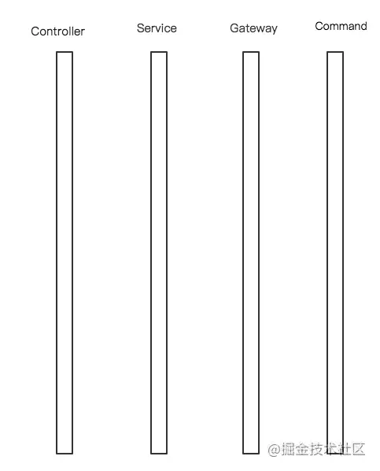
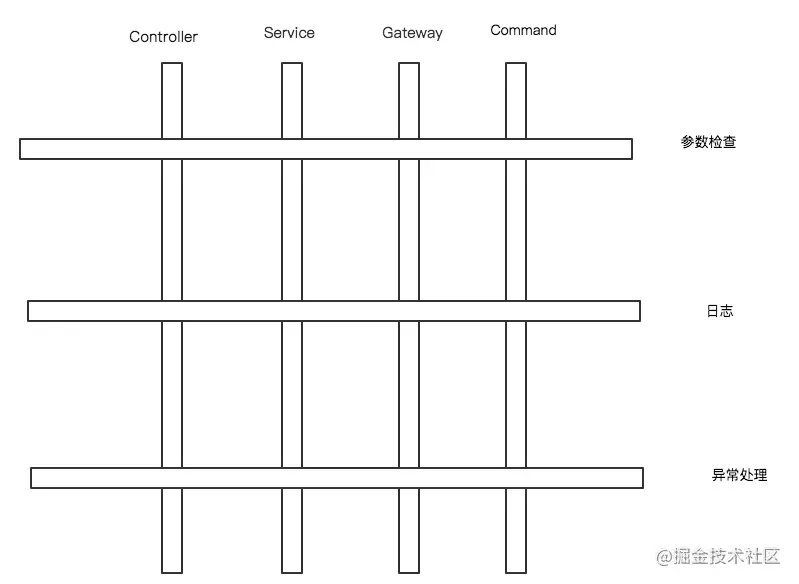
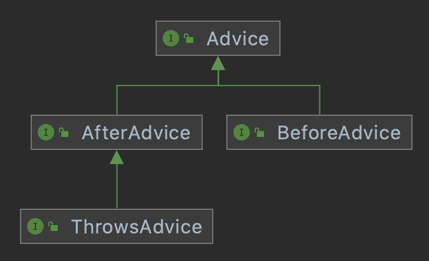
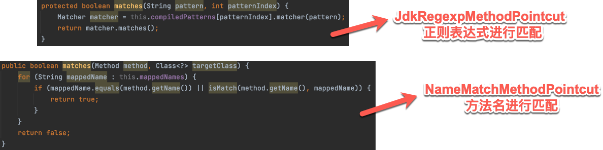
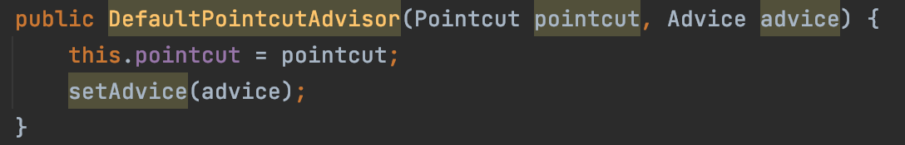
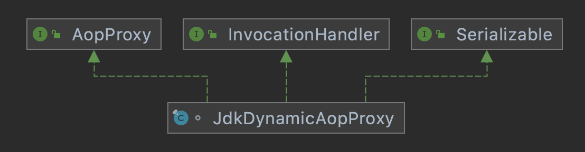

Spring AOP #
如无特殊说明，本文使用的 Spring 版本为 5.3.9。
1 背景 #
- 软件开发一直在寻求一种高效开发、扩展、维护的方式，从面向过程的开发实践中，前人将关注点抽象出来，对行为和属性进行聚合，形成了面向对象的开发思想，其在一定程度上影响了软件开发的过程。
- 鉴于此，我们在开发的过程中会对软件开发进行抽象、分割成各个模块或对象，例如，我们会对 API 进行抽象成四个模块，分别为
Controller、Service、Gateway、Command，这很好地解决了业务级别的开发，但对于系统级别的开发我们很难聚焦，比如，对于每一个模块需要进行打印日志、代码监控、异常处理，以打日志为例，我们只能将日志代码嵌套在各个对象上，而无法关注日志本身，这种现象有偏离了 OOP（Object-Oriented Programming, 面向对象编程）思想。  - 为了能更好地将系统级别的代码抽离出来，去掉与对象的耦合，就产生了 AOP（Aspect-Oriented Programming, 面向切面编程），如下图所示，OOP 属于一种横向扩展，AOP 属于一种纵向扩展，AOP 依托于 OOP，进一步将系统级别的代码抽象出来，进行纵向排列，实现低耦合。 
2 含义 #
- AOP，全称为 Aspect-Oriented Programming，即面向切面编程。
- 它是一种新的模块化机制，用来描述分散在对象、类或函数中的横切关注点，从关注点中分离出横切关注点是面向切面程序设计的核心概念。
- 分离关注点使解决特定领域问题的代码从业务逻辑中独立出来，业务逻辑代码中不再含有针对特定领域问题代码的调用，业务逻辑同特定领域问题的关系通过切面来封装、维护，这样原本分散在整个应用程序中的变动就可以很好地管理起来。
- Spring AOP 的核心技术是 JDK 动态代理，以动态代理技术为基础，设计出了一系列 AOP 的横切实现，比如前置通知、返回通知、异常通知，同时，Spring AOP 还提供了一系列的 Pointcut来匹配切入点，例如JdkRegexpMethodPointcut（正则切入点）、NameMatchMethodPointcut（方法名切入点），可以使用现有的切入点来设置横切面，也可以扩展相关的 Pointcut 方法来实现切入需求。
- 为了让 AOP 起作用，需要完成一系列的过程，比如：
- 需要为目标对象建立代理对象，这个代理对象可以通过使用 JDK 的 Proxy 来完成，也可以通过第三方的代理生成器 CGLIB 来完成。
- 需要启动代理对象的拦截器来完成各种横切面的织入，这一系列的织入是通过一系列的 Adapter 来实现的，通过这一系列 Adapter 的设计，可以把 AOP 的横切面设计和 Proxy 模式有机地结合起来，从而实现在 AOP 中定义好的各种织入方式。
3 家庭成员 #
Spring AOP 的家庭成员主要包括三个，分别为Advice（通知）、Pointcut（切点）、Advisor（通知器）。
3.1 Advice #
-
Advice定义在连接点做什么，比如打日志、执行缓存、处理异常等，为切面增强提供织入接口。
-
Advice 是 AOP 联盟定义的一个接口，在 Spring AOP 的实现中，使用了这个统一接口，并通过这个接口，为 AOP 切面增强的织入功能做了更多的细化和扩展，比如提供了更具体的通知类型，如
BeforeAdvice、AfterAdvice、ThrowsAdvice等，具体的切面增强可以通过这些接口集成到 AOP 框架中去发挥作用。
3.2 Pointcut #
-
Pointcut决定 Advice 通知应该作用于哪个连接点，也就是说通过 Pointcut 来定义需要增强的方法的集合，这些集合的选取可以按照一定的规则来完成，在这种情况下，Pointcut 通常意味着标识方法，例如，这些需要增强的地方可以由某个正则表达式进行标识或根据某个方法名进行匹配等。

3.3 Advisor #
-
将 Advice 和 Pointcut 结合起来，为即开即用地使用 AOP 基础设施提供了便利，下图为
DefaultPointcutAdvisor的一个有参构造函数：
4 原理 #
4.1 建立 AopProxy 代理对象 #
4.1.1 设计原理 #
-
在 Spring 的 AOP 模块中，一个主要的部分是代理对象的生成，主要通过配置和调用
ProxyFactoryBean来完成这个任务的，在ProxyFactoryBean中，封装了主要代理对象的生成过程，在这个生成过程中，可以使用 JDK 的 Proxy 和 CGLIB 两种生成方式。 -
以
ProxyFactoryBean为中心，相关类的继承关系如下：
-
在这个类继承关系中，可以看到完成 AOP 应用的类，比如
AspectJAdvisorFactory、ProxyFactoryBean、ProxyFactory，都在同一个类的继承体系下，都是ProxyConfig、AdvisedSupport、ProxyCreatorSupport的子类。 -
ProxyConfig可以看作是一个数据基类，主要提供了配置属性：public class ProxyConfig implements Serializable { private boolean proxyTargetClass = false; private boolean optimize = false; boolean opaque = false; boolean exposeProxy = false; private boolean frozen = false; } -
AdvisedSupport主要封装了 AOP 对通知和通知器的相关操作，这些操作对于不同的 AOP 的代理对象的生成都是一样的，但对于具体的 AOP 代理对象的创建，则会交给他们的子类去完成：/**部分方法**/ public class AdvisedSupport extends ProxyConfig implements Advised { @Override public void addAdvice(Advice advice) throws AopConfigException { int pos = this.advisors.size(); addAdvice(pos, advice); } @Override public void addAdvisor(Advisor advisor) { int pos = this.advisors.size(); addAdvisor(pos, advisor); } @Override public final Advisor[] getAdvisors() { return this.advisors.toArray(new Advisor[0]); } } -
ProxyCreatorSupport可以看做是子类对象创建 AOP 代理对象的一个辅助类，通过继承以上提到的基类的功能实现，具体的 AOP 代理对象的生成，根据不同的需要，分别由AspectJAdvisorFactory、ProxyFactoryBean、ProxyFactory来完成：/**部分方法**/ public class ProxyCreatorSupport extends AdvisedSupport { public ProxyCreatorSupport() { this.aopProxyFactory = new DefaultAopProxyFactory(); } public ProxyCreatorSupport(AopProxyFactory aopProxyFactory) { Assert.notNull(aopProxyFactory, "AopProxyFactory must not be null"); this.aopProxyFactory = aopProxyFactory; } public AopProxyFactory getAopProxyFactory() { return this.aopProxyFactory; } protected final synchronized AopProxy createAopProxy() { if (!this.active) { activate(); } return getAopProxyFactory().createAopProxy(this); } } -
AspectJAdvisorFactory起到集成 Spring 和 AspectJ 的作用，可以应用于需要使用 AspectJ 的 AOP 应用。 -
ProxyFactoryBean、ProxyFactory都提供了 AOP 功能的封装，区别是：ProxyFactoryBean可以在 IoC 容器中完成声明式配置来使用 Spring AOP 的功能。ProxyFactory需要使用编程式使用 Spring AOP 的功能。
-
4.1.2 配置 ProxyFactoryBean #
-
在分析 Spring AOP 的实现原理中，主要以 ProxyFactoryBean 的实现作为例子和实现的基本线索进行分析，这是因为ProxyFactoryBean 是在 Spring IoC 环境中创建 AOP 应用的底层方法，也是最灵活的方法，Spring通过他完成了对 AOP 使用的封装。
-
在基于 XML 配置 Spring 的 Bean 时，往往需要一系列的配置步骤来使用 ProxyFactoryBean 和 AOP：
-
定义使用的通知器 Advisor：
- 这个通知器定义了需要对目标对象进行增强的切面行为，也就是Advice 通知。
-
定义 ProxyFactoryBean：
- 封装 AOP 功能的主要类，配置时需要设定与 AOP 实现相关的重要属性，比如
proxyInterface、intercetorNames和target。
- 封装 AOP 功能的主要类，配置时需要设定与 AOP 实现相关的重要属性，比如
-
定义
target属性：- 需要用 AOP 通知器中的切面应用来增强的对象。

-
4.1.3 ProxyFactoryBean 生成 AopProxy 对象 #
AopProxy 对象的生成过程如下图所示：

-
从 FactoryBean 中获取对象，是以
getObject()方法作为入口的，ProxyFactoryBean 实现中的getObject()方法，是 FactoryBean 需要实现的接口，这里面封装了需要对target目标对象增加的增强处理，该方法首先对通知器链进行初始化，通知器链封装了一系列的拦截器，这些拦截器都需要从配置中读取，然后为代理对象的生成做好准备，在生成代理对象时，因为 Spring 中有singleton类型和prototype类型两种不同的 Bean，所需要对代理对象的生成做一个区分。 -
ProxyFactoryBean 的
getObject()方法的源码如下所示：public Object getObject() throws BeansException { initializeAdvisorChain(); /*初始化通知器链*/ if (isSingleton()) { /*对 singleton 和 prototype 的类型进行区分，生成对应的 proxy*/ return getSingletonInstance(); } else { if (this.targetName == null) { logger.info("Using non-singleton proxies with singleton targets is often undesirable. " + "Enable prototype proxies by setting the 'targetName' property."); } return newPrototypeInstance(); } }- 为 Proxy 代理对象配置 Advisor 链是在
initializeAdvisorChain()方法中完成的：-
这个初始化过程有一个标志位
advisorChainInitialized，用来表示通知器链是否已经初始化，如果已经初始化，那么这里就不会再初始化，而是直接返回，也就是说，这个初始化的工作发生在应用第一次通过 ProxyFactoryBean 去获取代理对象的时候。 -
在完成初始化之后，接着会读取配置中出现的所有通知器，这个取得通知器的过程也比较简单，把通知器的名字交给容器的
getBean()方法就可以了，这是通过对 IoC 容器实现的一个回调来完成的。 -
然后把从 IoC 容器中取得的通知器加入拦截器链中，这个动作是由
addAdvisorOnChainCreation方法来实现的。private synchronized void initializeAdvisorChain() throws AopConfigException, BeansException { if (this.advisorChainInitialized) { return; } if (!ObjectUtils.isEmpty(this.interceptorNames)) { if (this.beanFactory == null) { throw new IllegalStateException("No BeanFactory available anymore (probably due to serialization) " + "- cannot resolve interceptor names " + Arrays.asList(this.interceptorNames)); } // Globals can't be last unless we specified a targetSource using the property... if (this.interceptorNames[this.interceptorNames.length - 1].endsWith(GLOBAL_SUFFIX) && this.targetName == null && this.targetSource == EMPTY_TARGET_SOURCE) { throw new AopConfigException("Target required after globals"); } // Materialize interceptor chain from bean names. for (String name : this.interceptorNames) { /*添加 Advisor 链的调用，通过 interceptorNames 属性进行配置的*/ if (name.endsWith(GLOBAL_SUFFIX)) { if (!(this.beanFactory instanceof ListableBeanFactory)) { throw new AopConfigException( "Can only use global advisors or interceptors with a ListableBeanFactory"); } addGlobalAdvisors((ListableBeanFactory) this.beanFactory, name.substring(0, name.length() - GLOBAL_SUFFIX.length())); } else { // If we get here, we need to add a named interceptor. // We must check if it's a singleton or prototype. Object advice; /*如果程序在这里被调用，那么需要加入命名的拦截器 advice，并且需要检查这个 Bean 是 singleton 还是 prototype 类型的*/ if (this.singleton || this.beanFactory.isSingleton(name)) { // Add the real Advisor/Advice to the chain. advice = this.beanFactory.getBean(name); /*加入 advice 或 advisory*/ } else { // It's a prototype Advice or Advisor: replace with a prototype. // Avoid unnecessary creation of prototype bean just for advisor chain initialization. advice = new PrototypePlaceholderAdvisor(name); /*对 prototype 类型 Bean 的处理*/ } addAdvisorOnChainCreation(advice); } } } this.advisorChainInitialized = true; }
-
- 生成
singleton的代理对象是在getSingletonInstance()方法中完成的：-
这个方法是 ProxyFactoryBean 生成 AopProxy 代理对象的调用入口，代理对象会封装对
target目标对象的调用，也就是说针对target对象的方法调用行为会被这里生成的代理对象所拦截，具体的生成过程是：- 首先读取 ProxyFactoryBean 中的配置，为生成代理对象做好必要的准备，比如设置代理的方法调用接口等。
- Spring 通过 AopProxy 类来具体生成代理对象，AopProxy 是一个接口，由两个子类实现，一个是CglibAopProxy（最终使用的实际上是 ObjenesisCglibAopProxy，该类继承自 CglibAopProxy），另一个是JdkDynamicAopProxy，Spring 分别通过这两个子类来生成需要的 Proxy 代理对象。
private synchronized Object getSingletonInstance() { if (this.singletonInstance == null) { this.targetSource = freshTargetSource(); if (this.autodetectInterfaces && getProxiedInterfaces().length == 0 && !isProxyTargetClass()) { // Rely on AOP infrastructure to tell us what interfaces to proxy. Class<?> targetClass = getTargetClass(); /*根据 AOP 框架来判断需要代理的接口*/ if (targetClass == null) { throw new FactoryBeanNotInitializedException("Cannot determine target class for proxy"); } setInterfaces(ClassUtils.getAllInterfacesForClass(targetClass, this.proxyClassLoader)); /*设置代理对象的接口*/ } // Initialize the shared singleton instance. super.setFrozen(this.freezeProxy); this.singletonInstance = getProxy(createAopProxy()); /*使用 ProxyFactory 来生成需要的 Proxy*/ } return this.singletonInstance; }protected Object getProxy(AopProxy aopProxy) { /*通过 createAopProxy 返回的 AopProxy 来得到代理对象*/ return aopProxy.getProxy(this.proxyClassLoader); }
-
具体的代理对象的生成，是在 ProxyFactoryBean 的基类 AdvisedSupport 的实现中借助 AopProxyFactory 完成的：
-
这个代理对象要么从 JDK 中生成，要么借助 CGLIB 获得。
-
这里使用了 AopProxyFactory 来创建 AopProxy，AopProxyFactory 使用的是 DefaultAopProxyFactory，因此问题就转换为在 DefaultAopProxyFactory 中，AopProxy 是怎样生成的了：
- 关于 AopProxy 代理对象的生成，需要考虑使用哪种方式：
- 如果目标对象是接口类，那么适合使用 JDK 来生成目标对象的代理对象。
- 否则，会使用 CGLIB 来生成目标对象的代理对象。
- DefaultAopProxyFactory 作为 AopProxy 对象的生产工厂，可以根据不同的需要生成这两种 AopProxy 对象，在 DefaultAopProxyFactory 创建 AopProxy 对象的过程中，对不同的 AopProxy 代理对象的生成所涉及的生成策略和场景做了相应的设计，但是对于具体的 AopProxy 代理对象的生成，最终并没有由 DefaultAopProxyFactory 来完成，而是交给了 JdkDynamicAopProxy 和 ObjenesisCglibAopProxy（该类继承自 CglibAopProxy）。
private AopProxyFactory aopProxyFactory; public ProxyCreatorSupport() { this.aopProxyFactory = new DefaultAopProxyFactory(); } public AopProxyFactory getAopProxyFactory() { return this.aopProxyFactory; } protected final synchronized AopProxy createAopProxy() { if (!this.active) { activate(); } return getAopProxyFactory().createAopProxy(this); }@Override public AopProxy createAopProxy(AdvisedSupport config) throws AopConfigException { if (!NativeDetector.inNativeImage() && (config.isOptimize() || config.isProxyTargetClass() || hasNoUserSuppliedProxyInterfaces(config))) { Class<?> targetClass = config.getTargetClass(); if (targetClass == null) { throw new AopConfigException("TargetSource cannot determine target class: " + "Either an interface or a target is required for proxy creation."); } if (targetClass.isInterface() || Proxy.isProxyClass(targetClass)) { /*如果 targetClass 是接口类，使用 JDK 来生成 Proxy*/ return new JdkDynamicAopProxy(config); } return new ObjenesisCglibAopProxy(config); /*如果不是接口类要生成 Proxy，那么使用 CGLIB 来生成*/ } else { return new JdkDynamicAopProxy(config); } } - 关于 AopProxy 代理对象的生成，需要考虑使用哪种方式：
-
-
- 为 Proxy 代理对象配置 Advisor 链是在
4.1.4 JDK 生成 AopProxy 代理对象 #
-
在 JdkDynamicAopProxy 中，使用了 JDK 的 Proxy 类来生成代理对象。
-
首先需要从
advised对象中取得代理对象的代理接口配置，然后调用 Proxy 的newProxyInstance()方法，最终得到对应的 Proxy 代理对象。 -
再生成代理对象时，需要指明三个参数，分别是：
- 类装载器。
- 代理接口。
- Proxy 回调方法所在的对象。
- 这个对象需要实现 InvocationHandler 接口，该接口定义了
invoke()方法，提供代理对象的回调入口，具体原理可参考 3.2.1 JDK 动态代理。 - 对于JdkDynamicAopProxy，他本身实现了 InvocationHandler 接口和
invoke()方法，这个invoke()方法是 Proxy 代理对象的回调方法，所以可以使用this来把 JdkDynamicAopProxy 指派给 Proxy 对象，也就是说 JdkDynamicAopProxy 对象本身，在 Proxy 代理的接口方法被调用时，会触发invoke()的回调，从而完成对目标对象方法调用的拦截或者说功能增强。
- 这个对象需要实现 InvocationHandler 接口，该接口定义了

public Object getProxy(@Nullable ClassLoader classLoader) { if (logger.isTraceEnabled()) { logger.trace("Creating JDK dynamic proxy: " + this.advised.getTargetSource()); } return Proxy.newProxyInstance(classLoader, this.proxiedInterfaces, this); /*调用 JDK 生成 Proxy*/ }
4.2 拦截器调用的实现 #
4.2.1 设计原理 #
- 在Spring AOP通过JDK的Proxy方式或者CGLIB方式生成代理对象的时候，相关的拦截器已经配置到代理对象中去了，拦截器在代理中起作用是通过对这些方法的回调来完成的：
- 如果使用JDK的Proxy来生成代理对象，那么需要通过InvocationHandler的
invoke()方法来设置拦截回调。 - 如果使用CGLIB来生成代理对象，就需要根据CGLIB的使用要求，通过DynamicAdvisedInterceptor的
intercept()方法来设置拦截回调。
- 如果使用JDK的Proxy来生成代理对象，那么需要通过InvocationHandler的
4.2.2 JdkDynamicAopProxy的invoke拦截 #
JdkDynamicAopProxy中的 invoke()方法主要由以下功能：
- 设置Proxy对象，这些设置包括获取目标对象、拦截器链，同时把这些对象作为输入，创建了ReflectiveMethodInvocation对象，通过这个ReflectiveMethodInvocation对象来完成对AOP功能实现的封装。
- 包含了一个完整的拦截器链对目标对象的拦截过程，比如获得拦截器链并对拦截器链中的拦截器进行配置，逐个运行拦截器里的拦截增强，知道最后对目标对象方法的运行等。
public Object invoke(Object proxy, Method method, Object[] args) throws Throwable {
Object oldProxy = null;
boolean setProxyContext = false;
TargetSource targetSource = this.advised.targetSource;
Object target = null;
try {
if (!this.equalsDefined && AopUtils.isEqualsMethod(method)) {
// The target does not implement the equals(Object) method itself.
return equals(args[0]); /*如果目标对象没有实现 Object 类的基本方法 equals()*/
}
else if (!this.hashCodeDefined && AopUtils.isHashCodeMethod(method)) {
// The target does not implement the hashCode() method itself.
return hashCode(); /*如果目标对象没有实现 Object 类的基本方法 hashCode()*/
}
else if (method.getDeclaringClass() == DecoratingProxy.class) {
// There is only getDecoratedClass() declared -> dispatch to proxy config.
return AopProxyUtils.ultimateTargetClass(this.advised);
}
else if (!this.advised.opaque && method.getDeclaringClass().isInterface() &&
method.getDeclaringClass().isAssignableFrom(Advised.class)) {
// Service invocations on ProxyConfig with the proxy config...
return AopUtils.invokeJoinpointUsingReflection(this.advised, method, args); /*根据代理对象的配置来调用服务*/
}
Object retVal;
if (this.advised.exposeProxy) {
// Make invocation available if necessary.
oldProxy = AopContext.setCurrentProxy(proxy);
setProxyContext = true;
}
// Get as late as possible to minimize the time we "own" the target,
// in case it comes from a pool.
target = targetSource.getTarget(); /*得到目标对象*/
Class<?> targetClass = (target != null ? target.getClass() : null);
// Get the interception chain for this method.
List<Object> chain = this.advised.getInterceptorsAndDynamicInterceptionAdvice(method, targetClass); /*获得定义好的拦截器链*/
// Check whether we have any advice. If we don't, we can fallback on direct
// reflective invocation of the target, and avoid creating a MethodInvocation.
if (chain.isEmpty()) { /*如果没有设置拦截器，那么就直接调用 target 的对应方法*/
// We can skip creating a MethodInvocation: just invoke the target directly
// Note that the final invoker must be an InvokerInterceptor so we know it does
// nothing but a reflective operation on the target, and no hot swapping or fancy proxying.
Object[] argsToUse = AopProxyUtils.adaptArgumentsIfNecessary(method, args);
retVal = AopUtils.invokeJoinpointUsingReflection(target, method, argsToUse);
}
else { /*如果有拦截器的设定，那么需要调用拦截器之后才调用目标对象的相应方法，通过构造一个 ReflectiveMethodInvocation 来实现*/
// We need to create a method invocation...
MethodInvocation invocation =
new ReflectiveMethodInvocation(proxy, target, method, args, targetClass, chain);
// Proceed to the joinpoint through the interceptor chain.
retVal = invocation.proceed(); /*沿着拦截器链继续前进*/
}
// Massage return value if necessary.
Class<?> returnType = method.getReturnType();
if (retVal != null && retVal == target &&
returnType != Object.class && returnType.isInstance(proxy) &&
!RawTargetAccess.class.isAssignableFrom(method.getDeclaringClass())) {
// Special case: it returned "this" and the return type of the method
// is type-compatible. Note that we can't help if the target sets
// a reference to itself in another returned object.
retVal = proxy;
}
else if (retVal == null && returnType != Void.TYPE && returnType.isPrimitive()) {
throw new AopInvocationException(
"Null return value from advice does not match primitive return type for: " + method);
}
return retVal;
}
finally {
if (target != null && !targetSource.isStatic()) {
// Must have come from TargetSource.
targetSource.releaseTarget(target);
}
if (setProxyContext) {
// Restore old proxy.
AopContext.setCurrentProxy(oldProxy);
}
}
}
4.2.3 目标对象方法的调用 #
- 如果没有设置拦截器，那么会对目标对象的方法直接进行调用。
- 对于JdkDynamicAopProxy代理对象，这个对目标对象的方法调用是通过AopUtils使用反射机制在
AopUtils.invokeJoinpointUsingReflection()的方法中实现的，在这个调用中，首先得到调用方法的反射对象，然后使用invoke()启动对方法反射对象的调用。
public static Object invokeJoinpointUsingReflection(@Nullable Object target, Method method, Object[] args)
throws Throwable {
// Use reflection to invoke the method.
try {
ReflectionUtils.makeAccessible(method);
return method.invoke(target, args); /*使用反射调用 target 对象*/
}
catch (InvocationTargetException ex) {
// Invoked method threw a checked exception.
// We must rethrow it. The client won't see the interceptor.
throw ex.getTargetException(); /*抛出 AOP 异常，对异常进行转换*/
}
catch (IllegalArgumentException ex) {
throw new AopInvocationException("AOP configuration seems to be invalid: tried calling method [" +
method + "] on target [" + target + "]", ex);
}
catch (IllegalAccessException ex) {
throw new AopInvocationException("Could not access method [" + method + "]", ex);
}
}
4.2.4 拦截器的调用 #
- JdkDynamicAopProxy和CglibAopProxy虽然使用了不同的AopProxy代理对象，但他们对拦截器链的调用都是在ReflectiveMethodInvocation中通过
proceed()方法实现的。 proceed()方法的具体执行流程如下：- 先进行判断：
- 如果现在已经运行到拦截器链的末尾，那么就会直接调用目标对象的实现方法。
- 否则，沿着拦截器链继续进行，得到下一个拦截器，通过这个拦截器进行
matches判断，判断是否适用于横切片增强的场合：- 如果是，从拦截器中得到通知器，并启动通知器的
invoke()方法进行切面增强，在这个过程结束以后，会迭代调用proceed()方法，直到拦截器链中的拦截器都完成以上的拦截过程为止。
- 如果是，从拦截器中得到通知器，并启动通知器的
- 先进行判断：
public Object proceed() throws Throwable {
// We start with an index of -1 and increment early.
/**
* 从索引为 -1 的拦截器开始调用，并按序递增
* 如果拦截器链中的拦截器迭代调用完毕，就开始调用 target 的函数，这个函数是通过反射机制完成的，具体实现在 {@link AopUtils#invokeJoinpointUsingReflection} 方法中
*/
if (this.currentInterceptorIndex == this.interceptorsAndDynamicMethodMatchers.size() - 1) {
return invokeJoinpoint();
}
Object interceptorOrInterceptionAdvice =
this.interceptorsAndDynamicMethodMatchers.get(++this.currentInterceptorIndex); /*沿着定义好的 interceptorOrInterceptionAdvice 链进行处理*/
if (interceptorOrInterceptionAdvice instanceof InterceptorAndDynamicMethodMatcher) { /*对拦截器进行动态匹配的判断，如果和定义的 Pointcut 匹配，那么这个 advice 将得到执行*/
// Evaluate dynamic method matcher here: static part will already have
// been evaluated and found to match.
InterceptorAndDynamicMethodMatcher dm =
(InterceptorAndDynamicMethodMatcher) interceptorOrInterceptionAdvice;
Class<?> targetClass = (this.targetClass != null ? this.targetClass : this.method.getDeclaringClass());
if (dm.methodMatcher.matches(this.method, targetClass, this.arguments)) {
return dm.interceptor.invoke(this);
}
else {
// Dynamic matching failed.
// Skip this interceptor and invoke the next in the chain.
return proceed(); /*如果不匹配，那么 proceed 会被递归调用，知道所有的拦截器都被运行过为止*/
}
}
else {
// It's an interceptor, so we just invoke it: The pointcut will have
// been evaluated statically before this object was constructed.
return ((MethodInterceptor) interceptorOrInterceptionAdvice).invoke(this); /*如果是一个 interceptor，直接调用这个 interceptor 对应的方法*/
}
}
参考文献 #
- Spring-aop 全面解析（从应用到原理）。
- 《Spring 技术内幕-深入解析 Spring 架构与设计原理（第 2 版）》